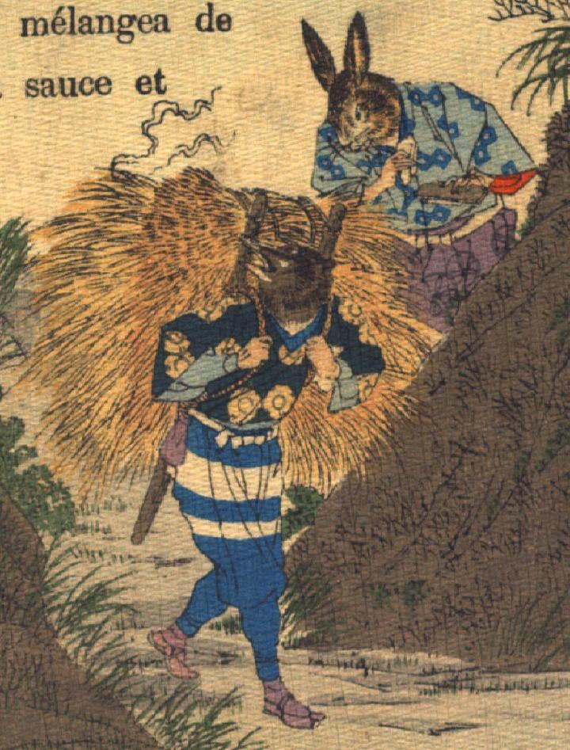

兎と狸。ともに着物に袴を着けている。狸は背負子で大量の柴を担いでおり、その柴から煙があがっている。兎は火打石を手にしており、狸が担ぐ柴に火を点けたようである。
著作者：J.Dautremer／出典：親書誌：U426_nichibunken_0101：Le mont Katsi Katsi／日付：2006／資源識別子：U426_nichibunken_0101_0006_0000
Copyright (c)2010- International Research Center for Japanese Studies, Kyoto, Japan. All rights reserved.